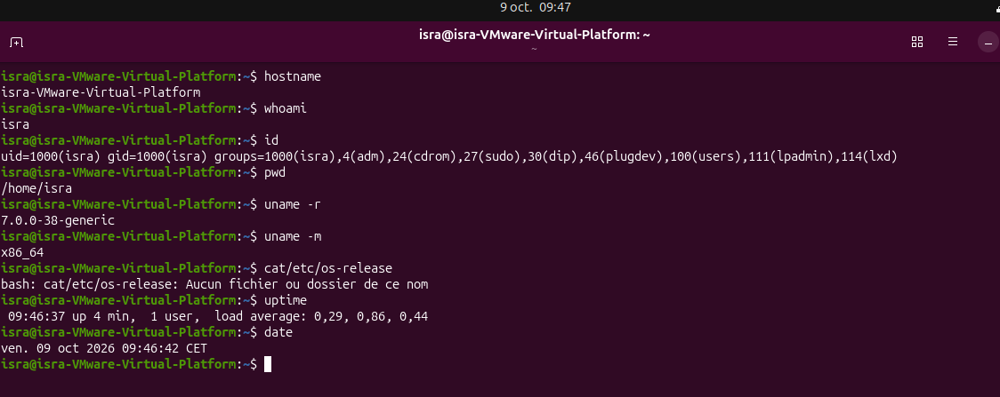

Créer deux pages, index.html et contact.html, et un dossier images/ contenant une image de votre
choix.
1. Dans index.html, écrire une barre de navigation (nav) avec trois liens de nature différente :
o un lien vers le site externe https://www.w3.org, ouvert dans un nouvel onglet ;
o un lien relatif vers contact.html ;
o un lien d'ancrage vers une section #apropos de la même page.
2. Créer dans index.html une section
